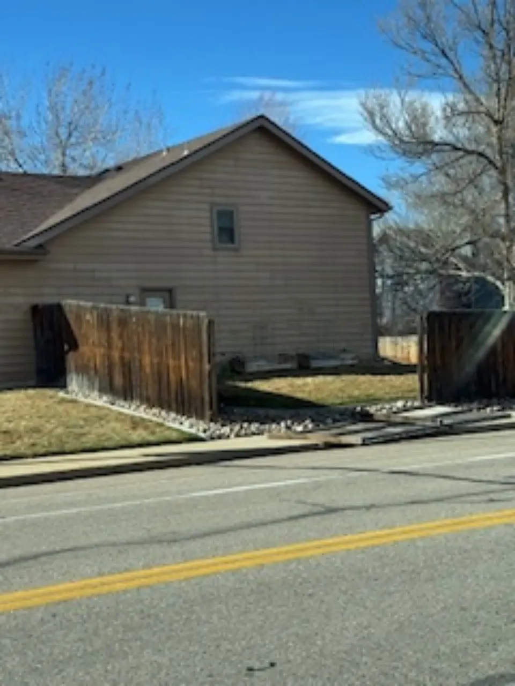

Fence Repair Fort Collins
Owner-operated service with direct communication from initial review through completed work.
Alpine Deck & Fence repairs wood privacy fences and backyard fences throughout Fort Collins and Northern Colorado. Repairs are scoped around the actual failure so homeowners can compare targeted repair against replacement.

Owner-operated service with direct communication from initial review through completed work.
Wind and age often expose weak posts, rails, gates, and connections.
Dragging, sagging, or failed gates can often be corrected with framing, post, hinge, or hardware work.
The repair is evaluated against the age and condition of the surrounding fence.
Send the project address, clear photos, approximate length, and whether any gates are involved.